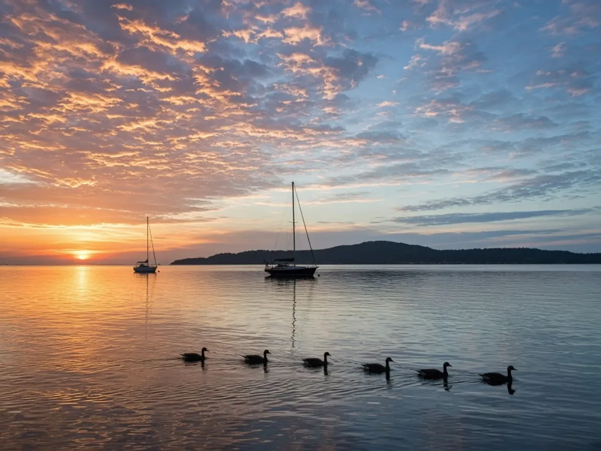
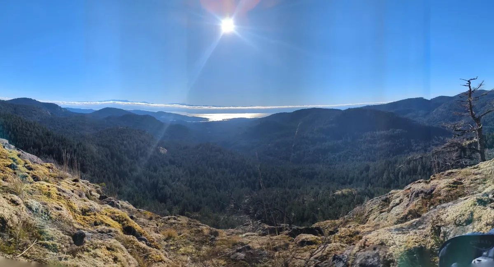
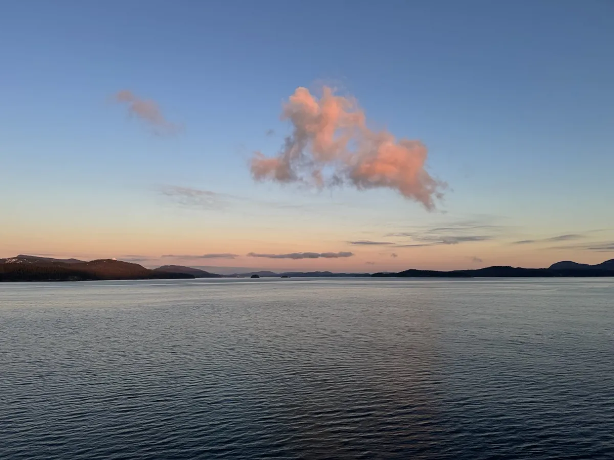
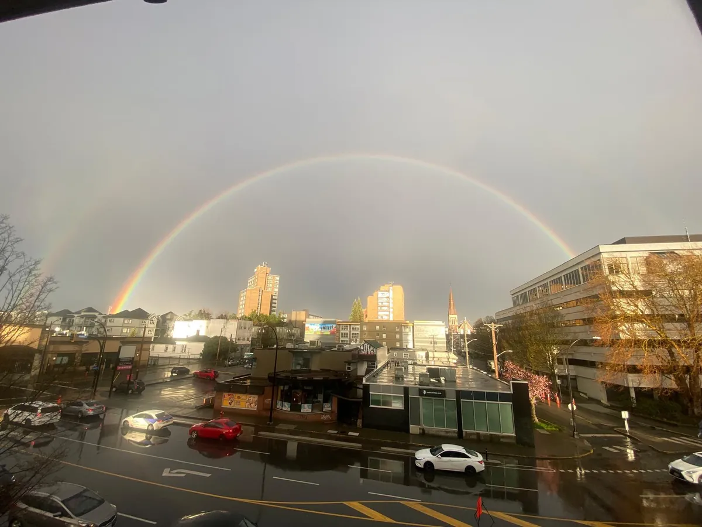
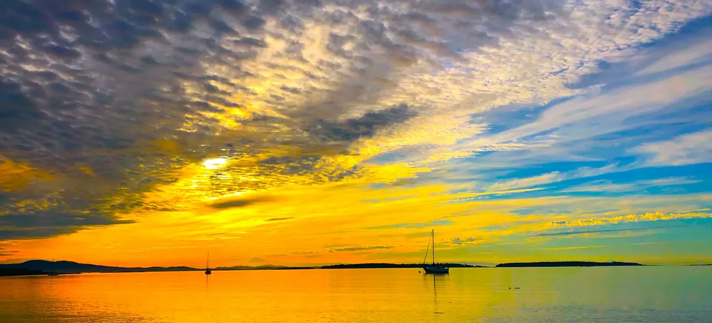

Coastal print gallery
A quieter line — Island light as photography. Same place story, different medium.





Island light as photography. Same place story, different medium.
A quieter line — Island light as photography. Same place story, different medium.



